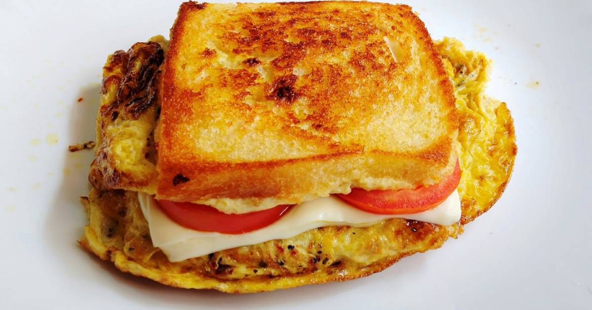

BREAD OMELET SANDWITCH

As with all eff or cheese recipes, this sandwitch too has to be consumed within 2 hours of
preparing it if not refrigerated. So it is not safe to pack this in the tiffin or lunch box unless
it is refrigerated.
Ingredients(CUP = 240ml)
- 2 to 3 slices bread brown
- 2 eggs
- 1 tablespoon oil
- salt as needed
- 1/8 teaspoon turmeric
- 1/8 teaspoon crushed black pepper crused as desired (optional)
- 1/6 teaspoon sandwitch masala or chaat masala (optional)
- 2 tablespoons onions chopped
- 1 tablespoon capsicum chopped
- 1 green chili chopped
- 1 tablespoon coriander leaves fine chopped
optional
- 1 tsp butter
- 1 to 2 slices cheese or grated cheese as desired
- 1 to 2 tsps Tomato ketchup or sandwitch chutney or any other chutney
- 1/4 tsp Italian herbs
Tips for bread omelette
-
I have made this sandwitch without any chutney,but I have tried this with schezwan sause
sause,tomato sause and green chutney on different occasions and felt the sause really enchances the
flavor of the bread omelet. So for variations you can try with green chutney or schezwan sause.
-
You can also make this sandwitch without cheese. I have used mozzarella cheese. Feel free to replace it with cheddar cheese.
You can also skip the cheese and just make the bread omelet.
- If you follow the food combining rules, then avoid using tomato sause.
- For health reasons, favor brown bread or multi grain bread.
- You can also sprinkle some chaat masala on the sandwitch.
Preparation for bread omelet
- Beat the eggs in a bowl until frothy.
- Add chopped onions,chilies,bell peppers, salt and coriander leaves.
- Beat well until the veggies are incorporated.
How to make omelette sandwitch
- Heat the pan with oil on a medium flame. When the pan turns hot, pour the beaten eggs. When the mixture begins to firm up square to a square.
- Flip it and fry on a medium heat until the egg is cooked completely. Sprinkle black pepper and Italian herbs(optional).
- Place a slice of cheese or grated cheese over the omelet.
- Lower the flame. Place a bread slice on the pan and transfer the egg omelet to the bread. Cover it with another slice of bread. Add a generous amount of butter.
- Flip and toast it on both the sides on a low flame until the cheese begins to melt. Press it down with a spatula while you toast the bread. Alternately you can toast this in a hot sandwich toaster.
- Serve bread omelet as a breakfast or brunch.